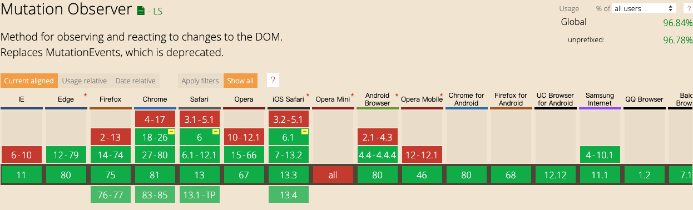

1.1.1. 水印生成解决方案
1.1.2. 前言
做客户管理系统时，可以有一需求怕截图内容外泄，处于安全考虑需要给系统加上水印，以给用户部分警示
1.1.3. 需求
- 能方便的自定义内容
- 检测水印节点变化
1.1.4. 解决方案
- 1.通过查阅资料了解到目前大部分使用的方案是通过canvas生成水印，即获取到想要的内容，通过canvas生成base64图片在网站最上层覆盖一层
- 2.通过svg生成水印，兼容性更好
- 3.通过NodeJs生成水印
- 4.使用
MutationObserver监听DOM变化及时作出反应
MutationObserver
通过canIUse 我们可以发现不部分的浏览器都兼容 MutationObserver，如需兼容更早的IE版本可以了解下 Mutation Events 此处不作展开

- disconnect()
- 阻止
MutationObserver实例继续接收通知，直到再次调用observe()时，该观察者对象包含的回调函数都不会再被调用
- 阻止
- observe()
- 通知实例接收通知
- takeRecords()
- 从
MutationObserver的通知队列中删除所有待处理的通知，并返回它们到MutationRecord对象的新数组中
- 从
一个DOM指定所要观察的特定变动有以下几种
| 属性 | 描述 |
|---|---|
| childList | 需要观察目标子节点，则设置为true |
| attributes | 如果需要观察目标节点的属性节点，也要观察该节点的文本内容变化则设置为true |
| characterData | |
| subtree | 是否需要观察目标节点的后代节点 |
| attributeOldValue | 在attributes设置为true的前提下，将发生变化的属性节点之前的属性值记录下来 |
| characterDataOldValue | characterData设置为true的前提下 |
| attributeFilter | 一个属性名数组，只有该数组中包含的属性名发生变化时才会被观察 |
1.1.5. 通过canvas生成水印
function _canvasWaterMark ({
content = 'Watermark', rotate = 30,
zIndex = 1000, parentNode = document.body,
width = 200, height = 200, textAlign = 'center', textBaseline = 'middle',
font = '20px Microsoft YaHei', fillStyle = 'rgba(184, 184, 184, 0.5)'
} = {}) {
let args = arguments[0]
let canvas = document.createElement('canvas')
canvas.setAttribute('width', width + 'px')
canvas.setAttribute('height', height + 'px')
let ctx = canvas.getContext('2d')
ctx.textAlign = textAlign
ctx.textBaseline = textBaseline
ctx.font = font
ctx.fillStyle = fillStyle
ctx.translate(width, height);
ctx.rotate(Math.PI / 180 * rotate)
ctx.translate(-width, -height)
ctx.fillText(content, width / 2, height / 2)
let base64Url = canvas.toDataURL()
const __wm = document.querySelector('.__wm')
const waterMaskLayer = document.createElement('div')
let styleStr = `position: absolute;top:0;left:0;width:100%;height:100%;z-index:${zIndex};pointer-events:none;background-repeat:repeat;background-image:url('${base64Url}')`
waterMaskLayer.setAttribute('style', styleStr)
waterMaskLayer.classList.add('__wm')
if (!__wm) {
parentNode.style.position = 'relative'
parentNode.insertBefore(waterMaskLayer, parentNode.firstChild)
}
const MutationObserver = window.MutationObserver || window.WebKitMutationObserver
if (MutationObserver) {
let mo = new MutationObserver(() => {
const __wm = document.querySelector('.__wm')
// 只有在 __wm 元素变动后才重新调用生成
if ((__wm && __wm.getAttribute('style') !== styleStr || !__wm)) {
// 避免重复调用
mo.disconnect()
mo = null
_canvasWaterMark(JSON.parse(JSON.stringify(args)))
}
})
mo.observe(parentNode, {attributes: true, subtree: true, childList: true})
}
}
参考 腾讯前端水印生成方案[https://musicfe.cn/page/15]